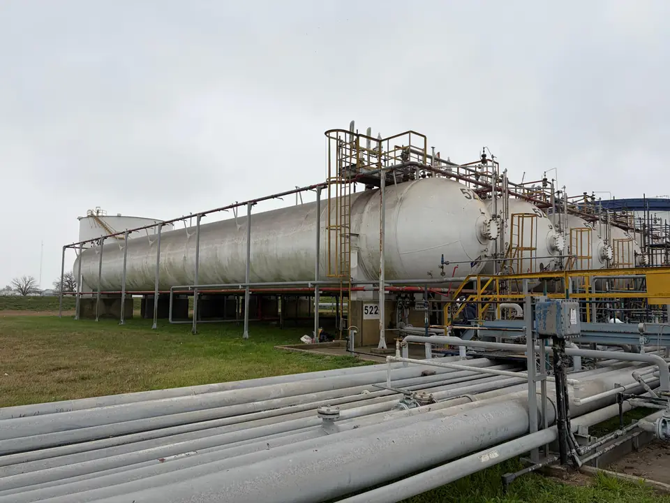
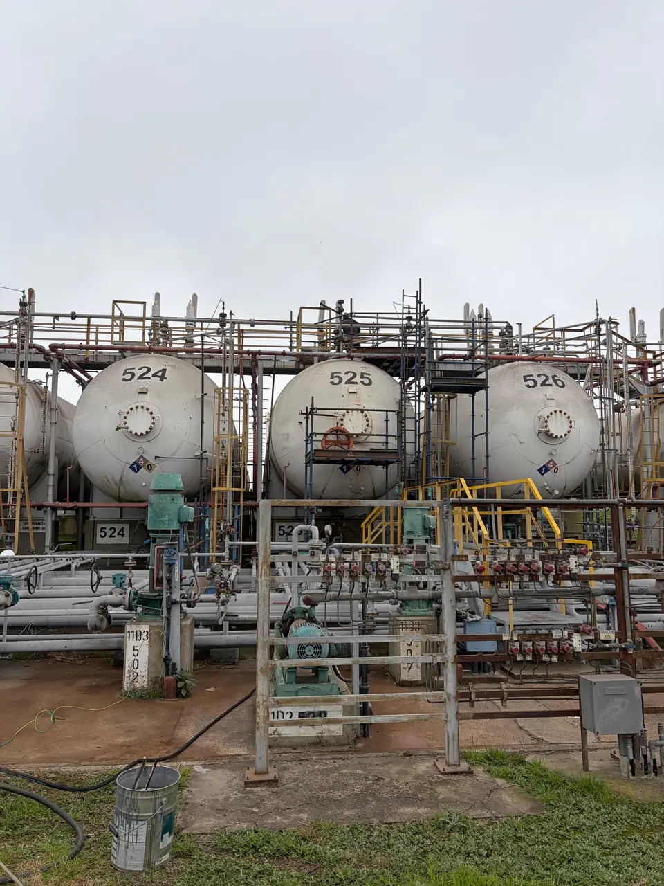
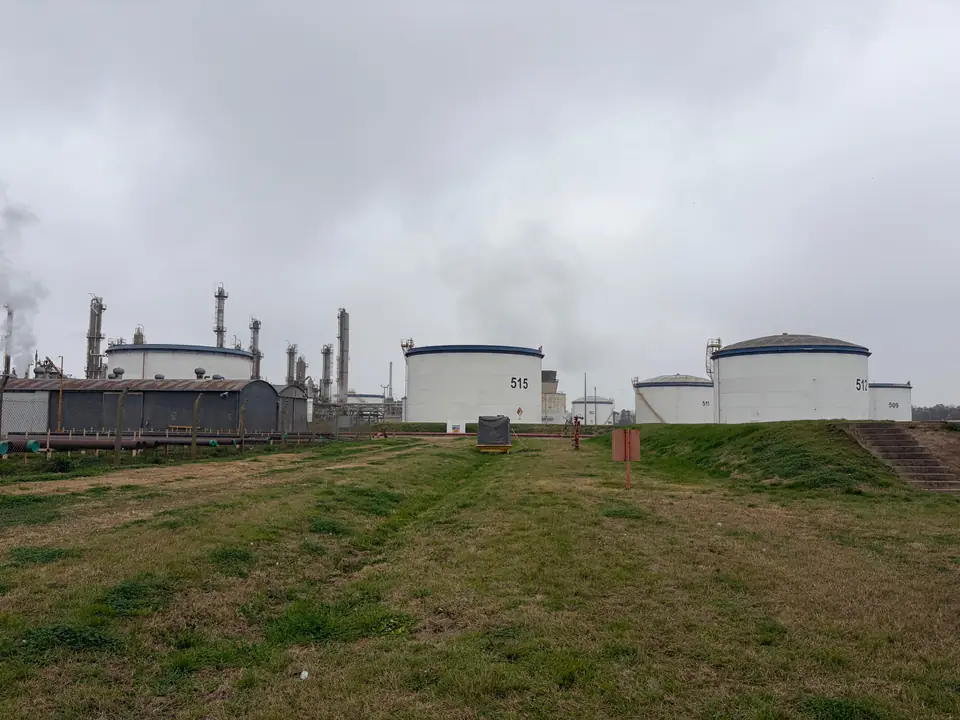

Caso destacado · Rehabilitación GLP
Rehabilitación de tanques cilíndricos de GLP
Se realizó el proceso completo para la rehabilitación decenal de 4 tanques cilíndricos de GLP en conjunto con Pampa Energía y otros colaboradores.
- Cliente
- Pampa Energía
- Ubicación
- Puerto General San Martín
- Equipo
- Tanque cilíndrico para almacenar GLP (360 m³)
- Fecha
- Agosto 2026
- Ensayos
- Ultrasonido y Prueba Hidráulica + Emisión Acústica
Registro fotográfico
Galería del trabajo

